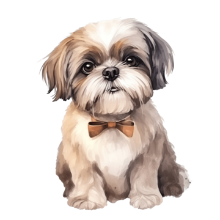
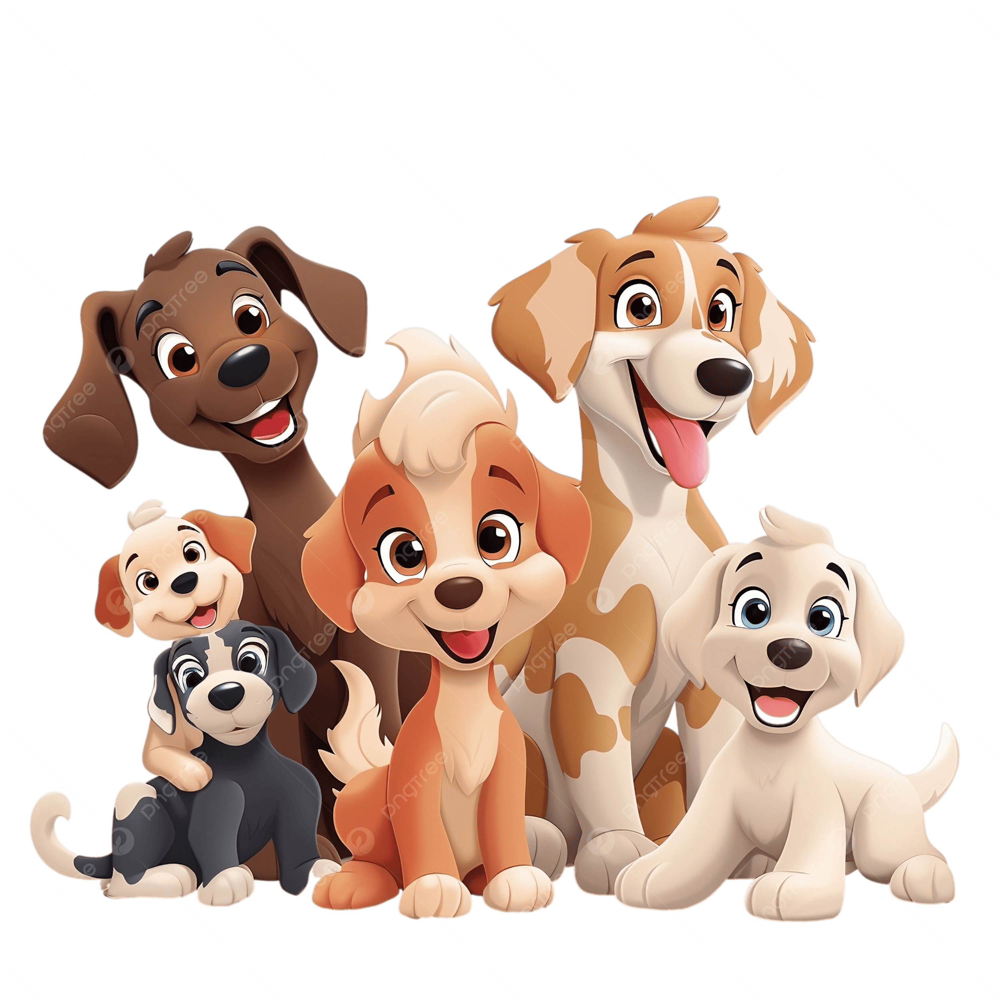
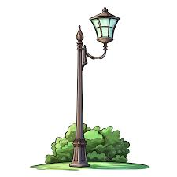
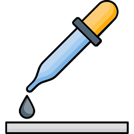

Vocabulario del cuento de Tanyi
Aquí encontrarás palabras interesantes del cuento de Tanyi con sus definiciones y ejemplos.

Mestiza
Perrito que tiene padres de diferentes razas, lo que hace que tenga características combinadas de varias razas.
Ejemplo: "Tanyi es una perrita mestiza, con características de varias razas que la hacen especial y única."

Cachorro
Cría joven de un perro u otro animal mamífero.
Ejemplo: "Meli encontró un pequeño cachorro en una caja junto a la farola."

Farola
Lámpara ubicada en la calle que sirve para iluminar las vías públicas durante la noche.
Ejemplo: "Meli escuchó un gemido que venía de una caja que había al lado de una farola."

Gotero
Instrumento pequeño que sirve para administrar líquidos gota a gota, muy útil para dar alimento o medicinas a animales muy pequeños.
Ejemplo: "Meli fue a buscar un gotero para darle un poco de leche al cachorrito."
Veterinario
Médico especializado en cuidar la salud de los animales.
Ejemplo: "Al día siguiente, Meli llevó al cachorrito al veterinario para que lo revisaran."